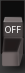
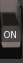

As a Computer Scientist I'm relieved when people honestly declare that they don't really understand computers. This relief is in contrast to my feeling of distress when I discover that someone I'm interacting with has a seriously inaccurate or at best limited and distorted understanding of computers.
It would be useful for most people to have at least a basic understanding of what computers are along with some basic ability to make use of them. This Simple Note is not designed for most people. Some people may find themselves interested in knowing quite a bit about computers but not know where to start. This Simple Note is for them.
I have a strong preference for starting with fundamentals every time I undertake a project, especially if I'm going to go very deep. This Simple Note is intended to cover the very basics of What Computers Are for someone who thinks they might want to go on and learn a lot about computers and computing. Such a person will have the patience for a very careful introduction.
A computer is a collection of switches linked together to provide memory functions and logic functions. To understand computers you need to know


A binary switch is a two-position switch like the simple ones used to turn lights on and off. We call it a binary switch because it has only two positions, ON and OFF. You can use such a switch to represent any either-or kind of information. Here are some examples:
| Interpretation | First Meaning | Second Meaning |
| Switch | On | Off |
| Answer | Yes | No |
| Truth | True | False |
| Number | 1 | 0 |
| Quantity | Some | None |
| Value Is | Known | Unknown |
One switch can only represent a choice of two alternatives. Combining several switches lets us represent more choices:
| Number of switches | Number of Combinations |
| 1 | 2 |
| 2 | 4 |
| 3 | 8 |
| 4 | 16 |
| 5 | 32 |
| 6 | 64 |
| 7 | 128 |
| 8 | 256 |
Four switches gives us enough combinations to express the decimal numbers 0 through 9, with six extra combinations left over. The extra combinations can be ignored or given the names A through F. Although you're free to assign combinations any way you want, here's the usual way we do it:
| Switch Settings | Bits | Hexadecimal | |||
| OFF | OFF | OFF | OFF | 0000 | 0 |
| OFF | OFF | OFF | ON | 0001 | 1 |
| OFF | OFF | ON | OFF | 0010 | 2 |
| OFF | OFF | ON | ON | 0011 | 3 |
| OFF | ON | OFF | OFF | 0100 | 4 |
| OFF | ON | OFF | ON | 0101 | 5 |
| OFF | ON | ON | OFF | 0110 | 6 |
| OFF | ON | ON | ON | 0000 | 7 |
| ON | OFF | OFF | OFF | 1000 | 8 |
| ON | OFF | OFF | ON | 1001 | 9 |
| ON | OFF | ON | OFF | 1010 | a, decimal 10 |
| ON | OFF | ON | ON | 0011 | b, decimal 11 |
| ON | ON | OFF | OFF | 1100 | c, decimal 12 |
| ON | ON | OFF | ON | 1101 | d, decimal 13 |
| ON | ON | ON | OFF | 1110 | e, decimal 14 |
| ON | ON | ON | ON | 1111 | f, decimal 15 |
Ganging together still more switches gives more patterns, some of which have special names and uses:
| Switches | Combinations | Name(s) | Typical Use(s) |
| 1 | 2 | bit | Boolean true/false |
| 4 | 16 | nybble | BCD, hexadecimal digit |
| 7 | 128 | char | ASCII Character |
| 8 | 256 | byte | Phonetic Alphabet, Input/Output |
| 10 | 1024, 1 Ki | K | approximate 1000 |
| 16 | 65536, 64 Ki | 2 bytes, short word | Arithmetic |
| 24 | 16777216, 16 Mi | 3-bytes | Red/Green/Blue color pixel |
| 32 | 4294967296, 4 Gi | 4-bytes long word | Unicode Character, Arithmetic, Memory address, IP address |
| 64 | 18446744073709551616 | 8-bytes, long long | Extended Arithmetic, Address, Cons-cell |
Early microprocessor-based computers, such as the original IBM PC were designed to work with 8 or 16 bits at a time. Most general purpose computers and more recent PCs are designed to work with 32 bits at a time. Scientific computers and the most recent PCs are designed to work with 64 bits at a time. The number of bits which a computer can work with in a single operation is called its "word size".
A computer with a smaller word size can simulate a computer with a larger word size by performing more operations, so for some tasks it will be slower. It is particularly inefficient for a computer to work with more memory than it can address as a single word - the meaning of this will be made clear in a companion Simple Note A Model Computer.
Data is generally transferred between computers and between computers and devices (mice, keyboards, disk drives, etc.) in bytes, i.e. 8-bits at a time. Bytes are the universal coinage of Input/Output. Thus computers with large word sizes must break those words down into bytes to perform Output and assemble received bytes into words when performing Input operations.